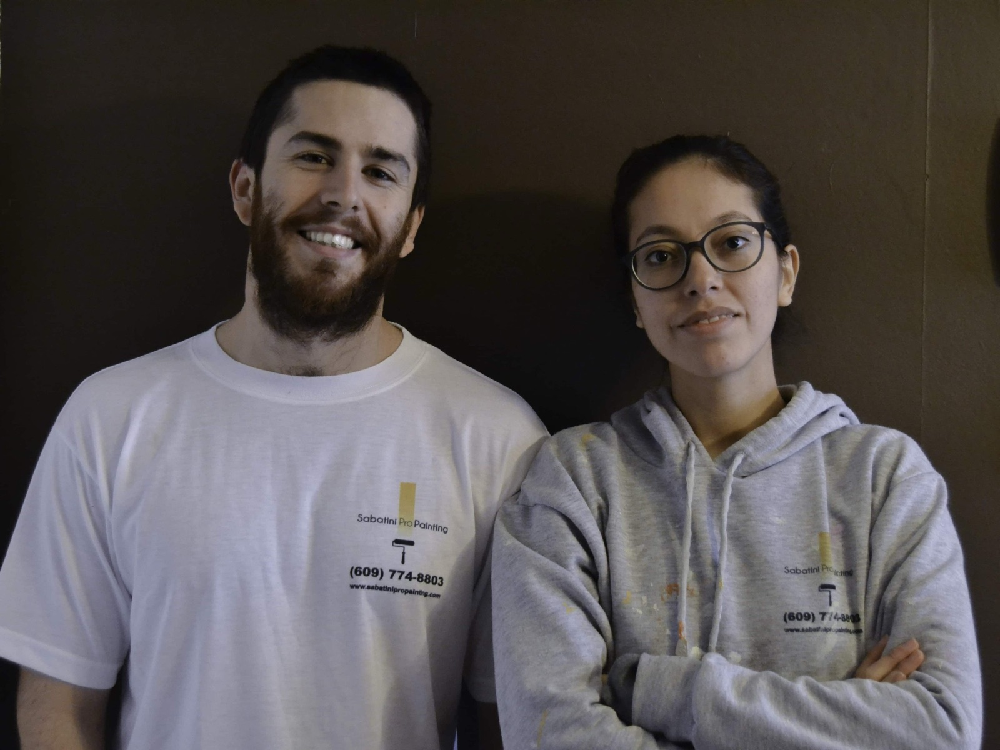
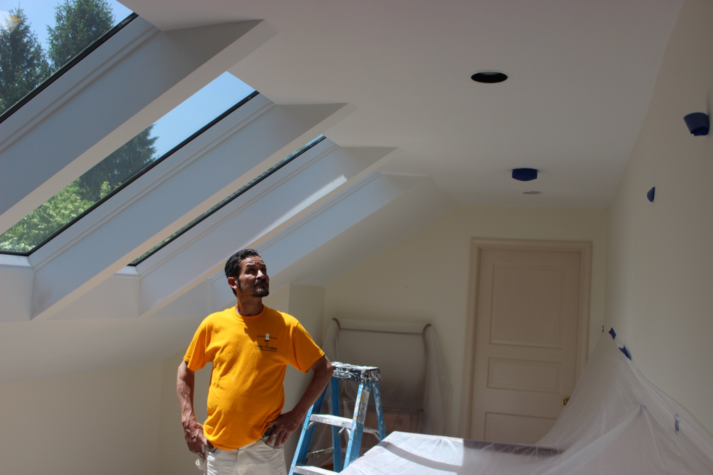
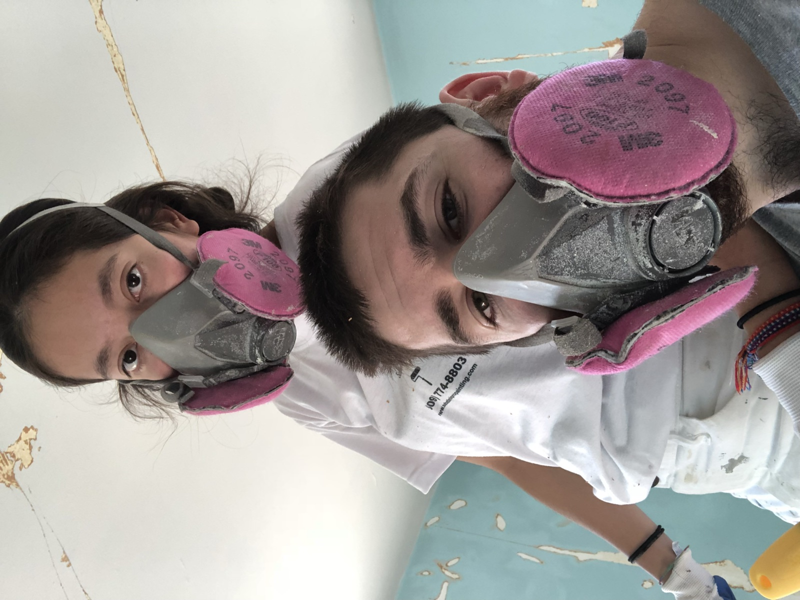
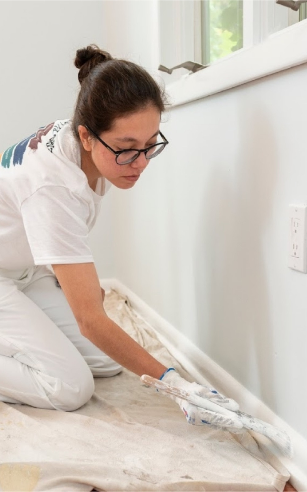
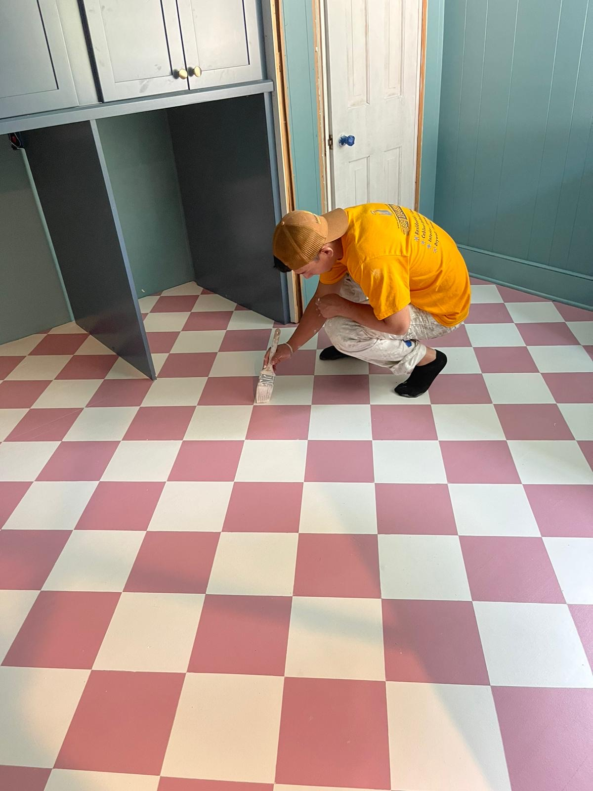
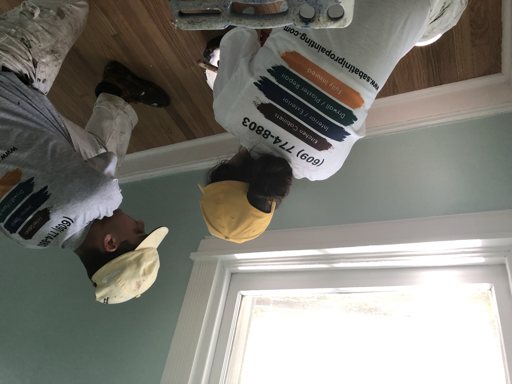
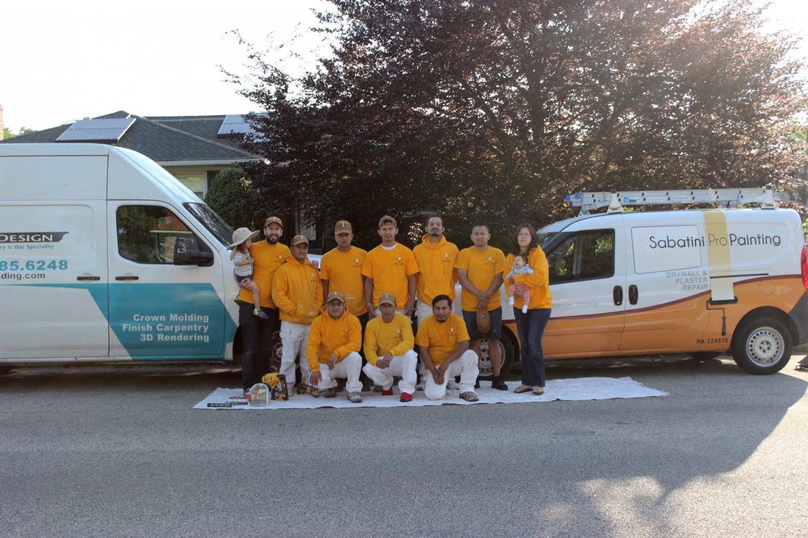
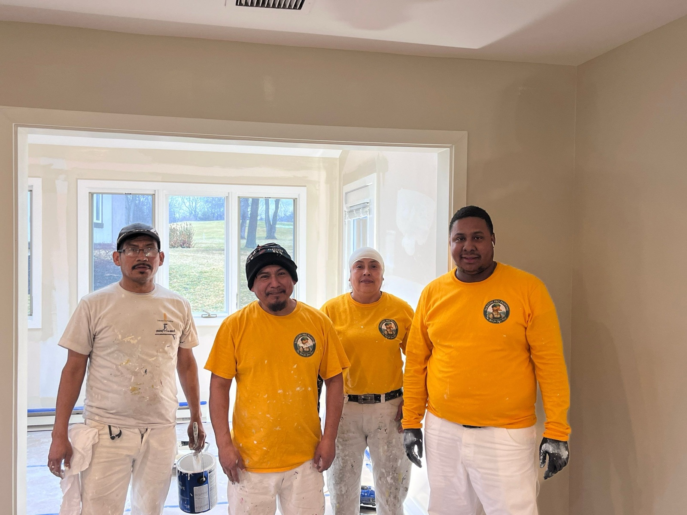

Hiring a painting company to paint your home is a lot like buying a mattress. You don't really know if you made the right decision until you're already living with it.
But you can return a mattress. You can't return a paint job. And even if you could somehow get your money back after a disaster, you'd never get back the weeks of aggravation, the strangers in your house doing who knows what, or the trust in contractors you lost along the way. We know it's a tough decision for a lot of homeowners.
I want to be straight with you about why that fear is so common: in this industry, chaos is the norm — and it's not because painters are bad people.
Most painting companies start the way ours did: someone knows how to paint, starts taking jobs, and learns how to run a business as they go.

But painting a wall and running a company are two very different skills, and when the second one is missing, the customer is the one who feels it — expectations that only ever live in the owner's head, a crew left to improvise, communication that runs on memory, quality that depends on who happened to show up that day.
Doing this well — showing up, communicating, respecting your home, finishing what was started, and building the people and systems that make all the little things happen — is a tough horse to ride, especially for the self-taught, which most of us are.
The only way to rise above that chaos is to be relentlessly intentional about it. I'll tell you where we learned that.

When my wife Alejandra and I started this company in 2015, it was just the two of us — a husband-and-wife crew painting houses together. It's much easier to manage a two-person company when you're one of the people and your wife is the other. We knew each other so well that we barely had to speak on a job. We were a great team. You can read the full story here.
When Alejandra got pregnant in 2020, everything changed. For the first time in my life, I had to become a manager and hire people! That's when I started learning the thing that shaped this whole company.
Finding painters isn't hard. There are a lot of them in Delaware County, at every level of skill. And honestly, the technical part of painting isn't that hard to learn — you could read the instructions on the can and give yourself a quality job if you cared enough to. I've met homeowners who, purely out of a desire to do it right, were better painters than people I'd interviewed.

In fact, you may have the same problem I had when I was looking for people to add to my team. There are over 1,000 registered painting companies in Delaware County alone. But where there's supply in skill, there's scarcity in the things that really matter and make the difference: being careful, being thoughtful, showing up on time (showing up at all) and being considerate of another human being's home, time, and concerns.
That's the exact problem I set out to solve — first for myself, and now for you. I couldn't change how many painters were out there. But I could be relentless about finding the few who had the things that actually matter, and even more relentless about keeping them.

So when I interview a painter, I'm not really asking how straight their lines are or how fast they can trim a door. I'm asking things like: "When's the last time you really screwed something up — and what did you do about it?" What I'm listening for is whether they see their work the way I do — as a self-portrait. I can teach someone the little things about paint. I can't teach them to care.

I don't do it this way out of the goodness of my heart. I'm a businessman, and I want to build something that lasts. I've just learned that the surest way to do that is to genuinely take care of the people who trust us inside their homes.
You can't return a paint job, so the only thing that really matters is getting it right the first time — and that starts with the right people. We've already done the hard part of finding them.

If you'd like to see them, you can meet the team — and if you're wondering how a job actually goes, here's our process, start to finish.
If you're willing to take a chance on us just as hundreds of others have, we promise to do whatever we can to live up to and maintain our quality reputation and give you "the Best for your Nest."
